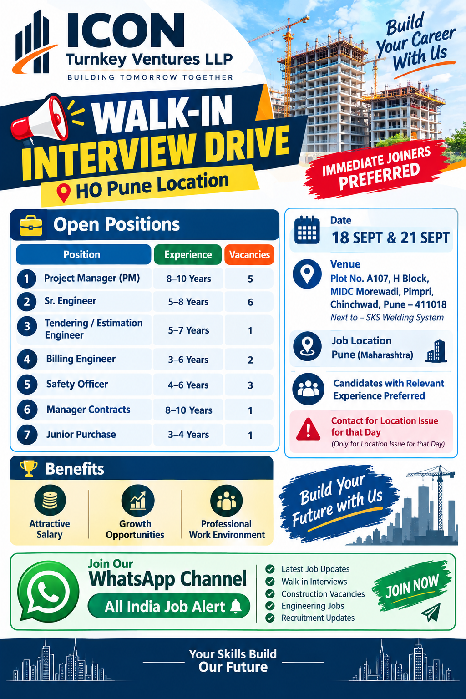

Walk-In Interview Drive – Pune
Build Your Career With Us

Icon Turnkey Ventures LLP is conducting a Walk-In Interview Drive in Pune for experienced professionals looking for opportunities in the construction, project management, engineering, estimation, billing, safety, contracts and procurement fields. The recruitment drive is scheduled for 18 September 2026 and 21 September 2026 in Pune. Candidates with relevant experience are encouraged to attend the interview and explore career opportunities with the organisation.
This recruitment drive is particularly suitable for professionals who have experience in construction and infrastructure-related activities and are looking for their next career opportunity in Pune. The available positions cover multiple departments, giving experienced candidates an opportunity to apply according to their professional background and area of expertise.
The company is looking for candidates who can contribute effectively to project execution, engineering coordination, quantity surveying, planning, estimation, billing, safety management, contract administration and purchase activities. Candidates should carefully review the experience requirement for each position before attending the interview.
Company: Icon Turnkey Ventures LLP
Interview Type: Walk-In Interview Drive
Interview Dates: 18 September 2026 & 21 September 2026
Job Location: Pune, Maharashtra
Venue: Plot No. A107, H Block, MIDC Morewadi, Pimpri, Chinchwad, Pune – 411018
Landmark: Next to SKS Welding System
Preference: Candidates with relevant experience preferred
Experience: 8–10 Years
Vacancies: 5 Positions
The Project Manager position is suitable for experienced construction professionals who have the ability to manage project activities, coordinate teams, monitor execution and ensure that work progresses according to project requirements. Candidates should be comfortable handling site-level coordination and working with different project departments.
Experience: 5–8 Years
Vacancies: 6 Positions
Senior Engineers will be expected to support project execution and coordinate technical activities at site. Candidates with strong practical knowledge, project coordination experience and the ability to work with construction teams can consider this opportunity.
Experience: 5–7 Years
Vacancies: 1 Position
This position is suitable for professionals experienced in tendering, estimation and preparation of project-related commercial or technical documentation. Candidates should have good attention to detail and understanding of construction requirements.
Experience: 3–6 Years
Vacancies: 2 Positions
Billing Engineers with relevant construction experience can apply for this opportunity. The role is appropriate for candidates familiar with project billing, quantity-related documentation, measurements and coordination with project teams.
Experience: 4–6 Years
Vacancies: 3 Positions
Safety Officers will be responsible for supporting safe working practices at project locations. Candidates with relevant construction safety experience and knowledge of site safety procedures are encouraged to attend the recruitment drive.
Experience: 8–10 Years
Vacancies: 1 Position
The Manager Contracts opportunity is intended for experienced professionals who have worked in construction contracts and related commercial or project documentation activities. Candidates with strong coordination and contract management skills may apply.
Experience: 3–4 Years
Vacancies: 1 Position
The Junior Purchase position is suitable for candidates with experience in construction purchase, vendor coordination, procurement documentation and material-related activities. Candidates who can coordinate effectively with suppliers and internal project teams may attend.
This recruitment drive is mainly intended for experienced professionals who meet the required experience criteria mentioned against each position. Candidates should select the position that best matches their experience, skills and previous project exposure.
Applicants should carry an updated resume or CV while attending the walk-in interview. It is recommended that candidates keep important educational and professional documents available for verification if required. Candidates should also make sure that their mobile number and email address are correctly mentioned in the resume so that the recruitment team can contact them regarding further selection stages.
Candidates applying for engineering, project management, billing, estimation, safety, contracts or purchase roles should highlight their relevant project experience clearly in their CV. Mentioning project type, years of experience, department handled and key responsibilities can help the recruitment team understand the candidate's profile quickly.
The Icon Turnkey Ventures LLP recruitment drive provides an opportunity for experienced professionals to explore construction-sector career options in Pune. The positions cover different functions, including project execution, engineering, estimation, billing, safety, contracts and procurement.
Professionals looking to develop their careers can benefit from exposure to project-based work and coordination with different departments. Working in construction projects can provide valuable experience in planning, execution, commercial activities, safety management, procurement and project coordination.
Candidates should attend the interview with a professional attitude and be prepared to discuss their previous work experience, responsibilities, technical knowledge and project exposure. Applicants should also be ready to explain their current or previous role and how their experience matches the position for which they are applying.
Plot No. A107, H Block,
MIDC Morewadi, Pimpri,
Chinchwad, Pune – 411018
Landmark: Next to SKS Welding System
Interested and eligible candidates can attend the Walk-In Interview Drive at the mentioned Pune venue on 18 September 2026 or 21 September 2026. Candidates should carry their updated resume/CV and be prepared to discuss their relevant experience.
Candidates can also contact the recruitment team using the details below. The provided contact number is specifically mentioned for location-related issues on the interview day.
Contact: 8956629907
Purpose of Contact: Only for location issue for that day
Candidates are advised to use the contact number responsibly and attend the interview after checking the venue and interview date carefully.
The available vacancies represent several important functions within the construction and project environment. Project Managers and Senior Engineers are generally associated with project execution and technical coordination, while Tendering and Estimation Engineers support estimation and tender-related activities. Billing Engineers work with project billing and quantity documentation, while Safety Officers focus on maintaining safe working practices.
The Manager Contracts role is aimed at experienced professionals with suitable contracts-related exposure, and the Junior Purchase position provides an opportunity for professionals working in procurement and purchase activities. Because the recruitment covers different departments, candidates should apply according to their actual experience rather than applying randomly for multiple positions.
A well-prepared CV should clearly show previous designation, total experience, project experience, technical responsibilities and relevant skills. Candidates who have worked on construction projects should mention the type of projects handled and the nature of their responsibilities wherever applicable.
For more job updates, construction vacancies, engineering jobs, walk-in interviews, supervisor jobs, safety jobs, billing jobs, planning jobs and other employment opportunities, follow our WhatsApp channel. New recruitment updates are shared regularly so job seekers can stay informed about current opportunities.
Get the latest job notifications and recruitment updates from All India Job Alert.
If you are actively searching for employment opportunities in the construction and infrastructure sector, joining our WhatsApp channel can help you receive recruitment updates more conveniently. Follow All India Job Alert for job vacancies from different companies, locations and departments.
Always verify the job details, company information, interview venue, eligibility criteria and application instructions before attending an interview or sharing personal documents. Candidates should never make payments to anyone in exchange for a job opportunity unless the employer has clearly specified a legitimate and verifiable requirement.